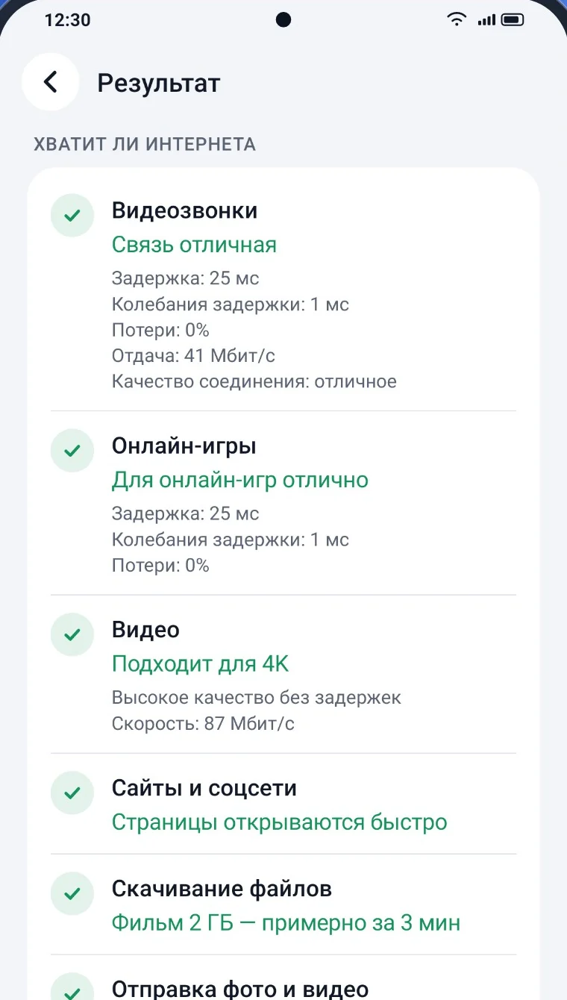
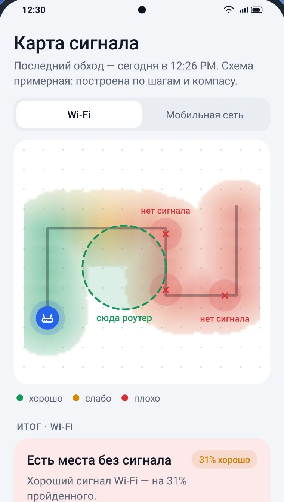
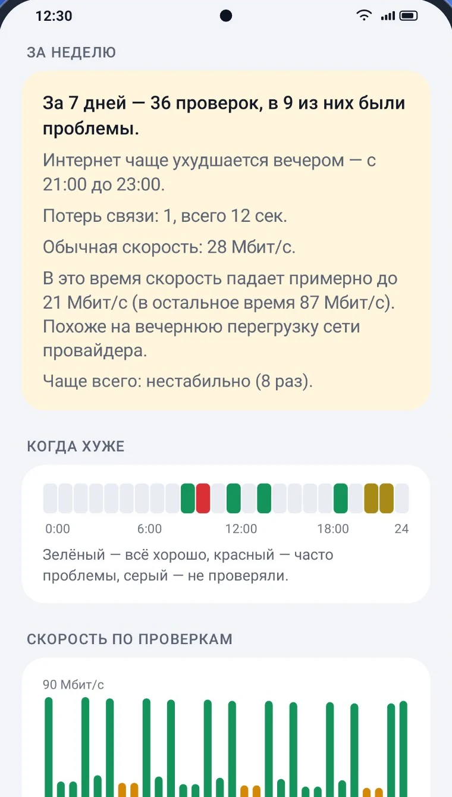

Телефон, Wi‑Fi, роутер, DNS, провайдер, интернет. Приложение проходит их по очереди и показывает, где именно сбой. Выберите ситуацию:
Телефон
Wi‑Fi
Роутер
DNS
Провайдер
Интернет
Проверяем…
Не ведётся на случайный хороший результат: задержку меряет до и после теста скорости, а доступ проверяет по нескольким независимым узлам.
Хватит ли интернета
Не мегабиты, а ответ: потянет или нет
Скорость загрузки и отдачи, задержка и стабильность — сразу с выводом для того, что вам важно.
Видеозвонки — будет ли связь без зависаний
Онлайн-игры — не будет ли задержек в игре
Видео в Full HD и 4K — пойдёт ли без буферизации
Сравнение с обычной скоростью — «обычно у вас 87 Мбит/с, сейчас 21»

Карта сигнала
Пройдитесь по квартире — карта нарисуется сама
Не нужно чертить план. Приложение строит путь по шагам и компасу, отмечает, где сигнал хороший, а где его нет, и подсказывает, куда лучше поставить роутер.
Wi‑Fi и мобильная сеть на одной карте
Мёртвые зоны видно сразу
Совет, куда переставить роутер

История
Покажет, когда интернет работает хуже
Каждая проверка сохраняется на телефоне. Приложение само замечает закономерности: «интернет чаще ухудшается вечером, с 21:00 до 23:00».
Автопроверка раз в 1, 3, 6 или 12 часов
Отдельно для Wi‑Fi и мобильной сети
Отчёт для техподдержки провайдера одной кнопкой, в том числе в PDF

Новое в 1.3
Можно ли вводить пароли в этом Wi‑Fi?
В кафе, гостинице, аэропорту или дома. Приложение смотрит, чем защищена сеть, нет ли рядом двойника с тем же именем, не подменяют ли сайты и ответы DNS.
Только доказанное
Приложение сообщает о проблеме, только когда может её показать. Никаких страшилок «на всякий случай».
Честно о том, чего не знаем
Если что-то проверить не удалось, так и будет написано, а не «всё хорошо».
«Ничего не найдено» — не «безопасно»
Чистый результат значит, что признаков атаки нет. Обещать большего никто честно не может.
12:30
Безопасность сети
Есть замечания
У сети есть слабые местаЗащита WPA2, но включён WPS
Что проверили
Защита Wi‑FiWPA2, но включён WPS
Похожие сетиДвойников с более слабой защитой рядом нет
Ответы DNSDNS отвечает честно
Подлинность сайтовСайты доказали, что настоящие
Незашифрованные страницыСтраницы приходят без изменений
Все проверки под рукой
И ещё много полезного
Wi‑Fi радар
Ходите с телефоном — сигнал меняется на глазах. Со звуком и вибрацией «теплее-холоднее».
Каналы Wi‑Fi
Не мешают ли соседские сети и какой канал свободнее: «Ваш канал перегружен. Попробуйте 11».
Наблюдение за связью
Работает при выключенном экране и записывает каждый обрыв: «20:17 — потеря связи 12 сек».
Устройства в сети
Сколько устройств сейчас в домашней сети. Можно подписать свои.
До и после перезагрузки
Помогла ли перезагрузка роутера — сравнение в цифрах.
Wi‑Fi или мобильный
Что сейчас быстрее: домашний Wi‑Fi или мобильный интернет.
Напомнить через 10 минут
Если сбой у провайдера, приложение напомнит проверить ещё раз.
Виджет и плитка
Последний результат на рабочем столе и проверка из шторки.
Для специалистов
Адреса, шлюз, DNS, IPv6, маршрут и MTU. Всё копируется одной кнопкой.
37 языков
От арабского до японского, с письмом справа налево. Светлая и тёмная тема.
И этот сайт тоже: без cookies, счётчиков посещений и сторонних шрифтов.
20
секунд до ответа
37
языков
0
трекеров
1,7
МБ — размер приложения
Вопросы
Это бесплатно?
Да. В приложении нет рекламы и платных функций.
Чем это лучше обычного теста скорости?
Тест скорости показывает цифру. Интернет Доктор объясняет, откуда она взялась: слабый Wi‑Fi, завис роутер, сбоит DNS или проблема у провайдера, — и говорит, что сделать. Ещё он проверяет стабильность, а не только скорость.
Нужно ли разбираться в сетях?
Нет. Ответы написаны обычными словами. Цифры для специалистов спрятаны под «Подробнее», если они вам понадобятся.
Зачем приложению геолокация?
Android показывает список соседних сетей Wi‑Fi только с этим разрешением. Оно нужно для проверки каналов и названия сети. Ваше местоположение приложение не определяет, а без разрешения всё остальное работает.
Что с мобильным интернетом?
Всё работает. Приложение понимает, что роутера нет, и даёт советы для мобильной сети: про сигнал, оператора и баланс.
Есть ли версия для iPhone?
Пока только Android, начиная с версии 8.
Как связаться с разработчиком?
Пишите на strmax195@gmail.com. В приложении есть кнопка «Отправить разработчику», если что-то пошло не так.
Узнайте, что с вашим интернетом
Двадцать секунд — и вы знаете, кому звонить и что делать.